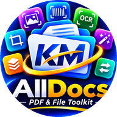

AllDocs – PDF & File Toolkit
Your pocket document studio — scan, OCR, convert
An all-in-one document toolkit. Turn photos into crisp PDFs, scan documents, pull text out with OCR, then merge, split and compress files — everything you need to handle paperwork on the go.
Why you'll love it
- Photos to professional PDFs
- Document scanning + OCR text extraction
- Merge, split, compress & convert
Get AllDocs – PDF & File Toolkit on Google PlayFree · No account needed · Lightweight & fast
Install Now